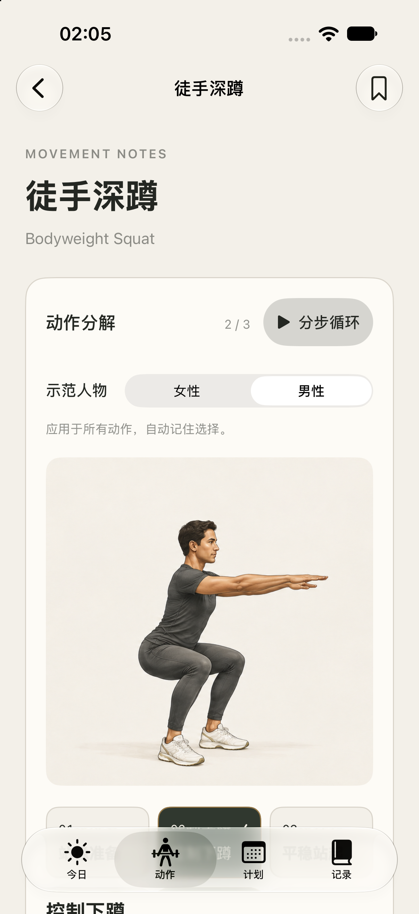
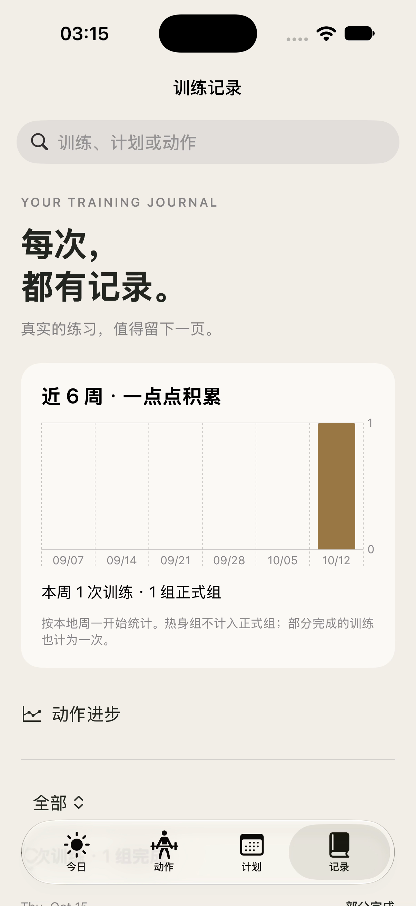
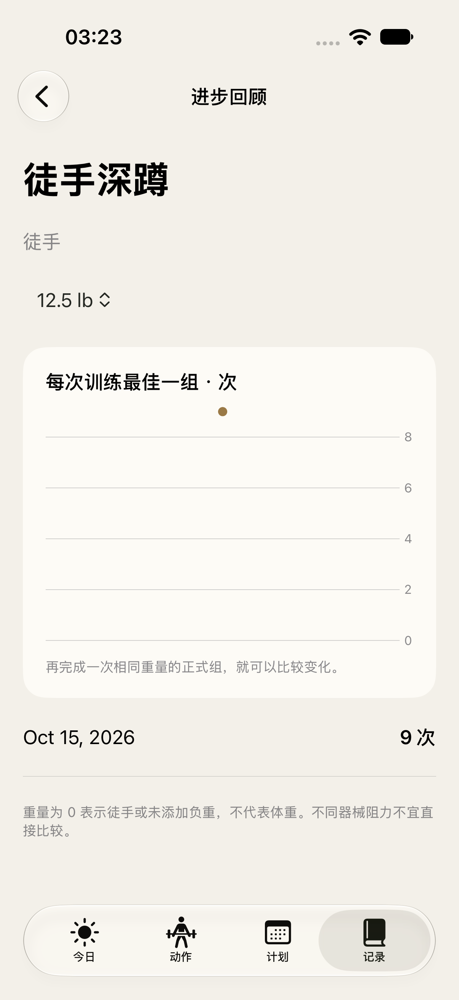

一个动作，分步看清。
每个动作都有三阶段姿态图、准备说明、呼吸要点、常见错误与调整方法。选择男性或女性示范，按自己的节奏查看步骤；按肌群、器械或名称寻找所需动作。
A field guide to your practice
查清动作，安排每周，记下每组。
一本随身的力量训练手册，让每次练习都有迹可循。
让动作、计划与记录彼此衔接。
每个动作都有三阶段姿态图、准备说明、呼吸要点、常见错误与调整方法。选择男性或女性示范，按自己的节奏查看步骤；按肌群、器械或名称寻找所需动作。
从每周 2、3、4 天的居家或健身房模板开始。选择星期，自定义动作顺序、组数、目标与休息。打开今日，就知道这次从哪里开始。
记录重量、次数或时长，区分热身与正式组，单侧动作左右分别记录。支持 kg/lb、休息计时，以及离开后继续尚未完成的训练。
回看训练历史与近期周次数，记录感受、修正输入。在相同动作、器械、侧别和重量下比较表现，也能导出 CSV，或用 JSON 备份恢复。
实际界面 · 训练数据仅作功能演示


